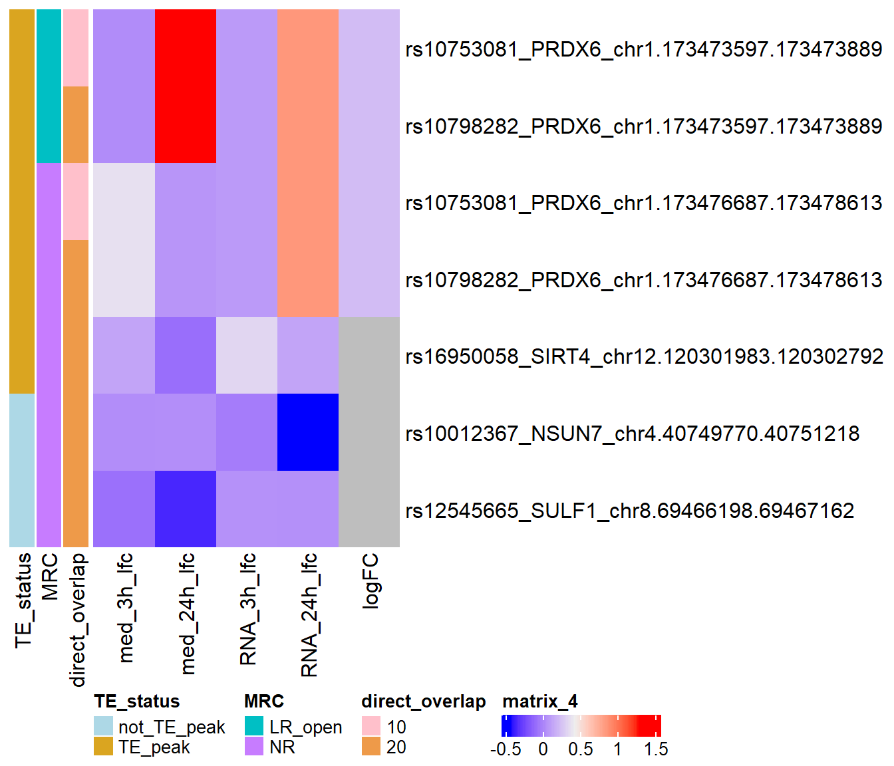

Plot for 6b
ERM
2025-01-14
Last updated: 2025-01-14
Checks: 7 0
Knit directory: ATAC_learning/
This reproducible R Markdown analysis was created with workflowr (version 1.7.1). The Checks tab describes the reproducibility checks that were applied when the results were created. The Past versions tab lists the development history.
Great! Since the R Markdown file has been committed to the Git repository, you know the exact version of the code that produced these results.
Great job! The global environment was empty. Objects defined in the global environment can affect the analysis in your R Markdown file in unknown ways. For reproduciblity it’s best to always run the code in an empty environment.
The command set.seed(20231016) was run prior to running
the code in the R Markdown file. Setting a seed ensures that any results
that rely on randomness, e.g. subsampling or permutations, are
reproducible.
Great job! Recording the operating system, R version, and package versions is critical for reproducibility.
Nice! There were no cached chunks for this analysis, so you can be confident that you successfully produced the results during this run.
Great job! Using relative paths to the files within your workflowr project makes it easier to run your code on other machines.
Great! You are using Git for version control. Tracking code development and connecting the code version to the results is critical for reproducibility.
The results in this page were generated with repository version 98d5af7. See the Past versions tab to see a history of the changes made to the R Markdown and HTML files.
Note that you need to be careful to ensure that all relevant files for
the analysis have been committed to Git prior to generating the results
(you can use wflow_publish or
wflow_git_commit). workflowr only checks the R Markdown
file, but you know if there are other scripts or data files that it
depends on. Below is the status of the Git repository when the results
were generated:
Ignored files:
Ignored: .RData
Ignored: .Rhistory
Ignored: .Rproj.user/
Ignored: data/ACresp_SNP_table.csv
Ignored: data/ARR_SNP_table.csv
Ignored: data/All_merged_peaks.tsv
Ignored: data/CAD_gwas_dataframe.RDS
Ignored: data/CTX_SNP_table.csv
Ignored: data/Collapsed_expressed_NG_peak_table.csv
Ignored: data/DEG_toplist_sep_n45.RDS
Ignored: data/FRiP_first_run.txt
Ignored: data/Final_four_data/
Ignored: data/Frip_1_reads.csv
Ignored: data/Frip_2_reads.csv
Ignored: data/Frip_3_reads.csv
Ignored: data/Frip_4_reads.csv
Ignored: data/Frip_5_reads.csv
Ignored: data/Frip_6_reads.csv
Ignored: data/GO_KEGG_analysis/
Ignored: data/HF_SNP_table.csv
Ignored: data/Ind1_75DA24h_dedup_peaks.csv
Ignored: data/Ind1_TSS_peaks.RDS
Ignored: data/Ind1_firstfragment_files.txt
Ignored: data/Ind1_fragment_files.txt
Ignored: data/Ind1_peaks_list.RDS
Ignored: data/Ind1_summary.txt
Ignored: data/Ind2_TSS_peaks.RDS
Ignored: data/Ind2_fragment_files.txt
Ignored: data/Ind2_peaks_list.RDS
Ignored: data/Ind2_summary.txt
Ignored: data/Ind3_TSS_peaks.RDS
Ignored: data/Ind3_fragment_files.txt
Ignored: data/Ind3_peaks_list.RDS
Ignored: data/Ind3_summary.txt
Ignored: data/Ind4_79B24h_dedup_peaks.csv
Ignored: data/Ind4_TSS_peaks.RDS
Ignored: data/Ind4_V24h_fraglength.txt
Ignored: data/Ind4_fragment_files.txt
Ignored: data/Ind4_fragment_filesN.txt
Ignored: data/Ind4_peaks_list.RDS
Ignored: data/Ind4_summary.txt
Ignored: data/Ind5_TSS_peaks.RDS
Ignored: data/Ind5_fragment_files.txt
Ignored: data/Ind5_fragment_filesN.txt
Ignored: data/Ind5_peaks_list.RDS
Ignored: data/Ind5_summary.txt
Ignored: data/Ind6_TSS_peaks.RDS
Ignored: data/Ind6_fragment_files.txt
Ignored: data/Ind6_peaks_list.RDS
Ignored: data/Ind6_summary.txt
Ignored: data/Knowles_4.RDS
Ignored: data/Knowles_5.RDS
Ignored: data/Knowles_6.RDS
Ignored: data/LiSiLTDNRe_TE_df.RDS
Ignored: data/MI_gwas.RDS
Ignored: data/SNP_GWAS_PEAK_MRC_id
Ignored: data/SNP_GWAS_PEAK_MRC_id.csv
Ignored: data/SNP_gene_cat_list.tsv
Ignored: data/SNP_supp_schneider.RDS
Ignored: data/TE_info/
Ignored: data/TFmapnames.RDS
Ignored: data/all_TSSE_scores.RDS
Ignored: data/all_four_filtered_counts.txt
Ignored: data/aln_run1_results.txt
Ignored: data/anno_ind1_DA24h.RDS
Ignored: data/anno_ind4_V24h.RDS
Ignored: data/annotated_gwas_SNPS.csv
Ignored: data/background_n45_he_peaks.RDS
Ignored: data/cardiac_muscle_FRIP.csv
Ignored: data/cardiomyocyte_FRIP.csv
Ignored: data/col_ng_peak.csv
Ignored: data/cormotif_full_4_run.RDS
Ignored: data/cormotif_full_4_run_he.RDS
Ignored: data/cormotif_full_6_run.RDS
Ignored: data/cormotif_full_6_run_he.RDS
Ignored: data/cormotif_probability_45_list.csv
Ignored: data/cormotif_probability_45_list_he.csv
Ignored: data/cormotif_probability_all_6_list.csv
Ignored: data/cormotif_probability_all_6_list_he.csv
Ignored: data/datasave.RDS
Ignored: data/embryo_heart_FRIP.csv
Ignored: data/enhancer_list_ENCFF126UHK.bed
Ignored: data/enhancerdata/
Ignored: data/filt_Peaks_efit2.RDS
Ignored: data/filt_Peaks_efit2_bl.RDS
Ignored: data/filt_Peaks_efit2_n45.RDS
Ignored: data/first_Peaksummarycounts.csv
Ignored: data/first_run_frag_counts.txt
Ignored: data/full_bedfiles/
Ignored: data/gene_ref.csv
Ignored: data/gwas_1_dataframe.RDS
Ignored: data/gwas_2_dataframe.RDS
Ignored: data/gwas_3_dataframe.RDS
Ignored: data/gwas_4_dataframe.RDS
Ignored: data/gwas_5_dataframe.RDS
Ignored: data/high_conf_peak_counts.csv
Ignored: data/high_conf_peak_counts.txt
Ignored: data/high_conf_peaks_bl_counts.txt
Ignored: data/high_conf_peaks_counts.txt
Ignored: data/hits_files/
Ignored: data/hyper_files/
Ignored: data/hypo_files/
Ignored: data/ind1_DA24hpeaks.RDS
Ignored: data/ind1_TSSE.RDS
Ignored: data/ind2_TSSE.RDS
Ignored: data/ind3_TSSE.RDS
Ignored: data/ind4_TSSE.RDS
Ignored: data/ind4_V24hpeaks.RDS
Ignored: data/ind5_TSSE.RDS
Ignored: data/ind6_TSSE.RDS
Ignored: data/initial_complete_stats_run1.txt
Ignored: data/left_ventricle_FRIP.csv
Ignored: data/median_24_lfc.RDS
Ignored: data/median_3_lfc.RDS
Ignored: data/mergedPeads.gff
Ignored: data/mergedPeaks.gff
Ignored: data/motif_list_full
Ignored: data/motif_list_n45
Ignored: data/motif_list_n45.RDS
Ignored: data/multiqc_fastqc_run1.txt
Ignored: data/multiqc_fastqc_run2.txt
Ignored: data/multiqc_genestat_run1.txt
Ignored: data/multiqc_genestat_run2.txt
Ignored: data/my_hc_filt_counts.RDS
Ignored: data/my_hc_filt_counts_n45.RDS
Ignored: data/n45_bedfiles/
Ignored: data/n45_files
Ignored: data/other_papers/
Ignored: data/peakAnnoList_1.RDS
Ignored: data/peakAnnoList_2.RDS
Ignored: data/peakAnnoList_24_full.RDS
Ignored: data/peakAnnoList_24_n45.RDS
Ignored: data/peakAnnoList_3.RDS
Ignored: data/peakAnnoList_3_full.RDS
Ignored: data/peakAnnoList_3_n45.RDS
Ignored: data/peakAnnoList_4.RDS
Ignored: data/peakAnnoList_5.RDS
Ignored: data/peakAnnoList_6.RDS
Ignored: data/peakAnnoList_Eight.RDS
Ignored: data/peakAnnoList_full_motif.RDS
Ignored: data/peakAnnoList_n45_motif.RDS
Ignored: data/siglist_full.RDS
Ignored: data/siglist_n45.RDS
Ignored: data/summary_peakIDandReHeat.csv
Ignored: data/test.list.RDS
Ignored: data/testnames.txt
Ignored: data/toplist_6.RDS
Ignored: data/toplist_full.RDS
Ignored: data/toplist_full_DAR_6.RDS
Ignored: data/toplist_n45.RDS
Ignored: data/trimmed_seq_length.csv
Ignored: data/unclassified_full_set_peaks.RDS
Ignored: data/unclassified_n45_set_peaks.RDS
Ignored: data/xstreme/
Ignored: trimmed_Ind1_75DA24h_S7.nodup.splited.bam/
Untracked files:
Untracked: Correlationplot_scaled.pdf
Untracked: DOX_DAR_assess.Rmd
Untracked: EAR_2_plot.pdf
Untracked: ESR_1_plot.pdf
Untracked: Firstcorr plotATAC.pdf
Untracked: IND1_2_3_6_corrplot.pdf
Untracked: LR_3_plot.pdf
Untracked: NR_1_plot.pdf
Untracked: analysis/Expressed_RNA_associations.Rmd
Untracked: analysis/LFC_corr.Rmd
Untracked: analysis/SVA.Rmd
Untracked: analysis/Tan2020.Rmd
Untracked: analysis/my_hc_filt_counts.csv
Untracked: code/IGV_snapshot_code.R
Untracked: code/LongDARlist.R
Untracked: code/MRC_clusterlog2cpm.R
Untracked: code/TSSE.R
Untracked: code/just_for_Fun.R
Untracked: code/toplist_assembly.R
Untracked: dataredo.RData
Untracked: datasave.RDS
Untracked: lcpm_filtered_corplot.pdf
Untracked: log2cpmfragcount.pdf
Untracked: output/cormotif_probability_45_list.csv
Untracked: output/cormotif_probability_all_6_list.csv
Untracked: output_1_Mecom.txt
Untracked: setup.RData
Untracked: splited/
Untracked: trimmed_Ind1_75DA24h_S7.nodup.fragment.size.distribution.pdf
Untracked: trimmed_Ind1_75DA3h_S1.nodup.fragment.size.distribution.pdf
Unstaged changes:
Modified: ATAC_learning.Rproj
Modified: analysis/Enhancer_files_ff.Rmd
Modified: analysis/TE_analysis_ff.Rmd
Modified: analysis/final_four_analysis.Rmd
Note that any generated files, e.g. HTML, png, CSS, etc., are not included in this status report because it is ok for generated content to have uncommitted changes.
These are the previous versions of the repository in which changes were
made to the R Markdown
(analysis/Correlation_of_SNPnPEAK.Rmd) and HTML
(docs/Correlation_of_SNPnPEAK.html) files. If you’ve
configured a remote Git repository (see ?wflow_git_remote),
click on the hyperlinks in the table below to view the files as they
were in that past version.
| File | Version | Author | Date | Message |
|---|---|---|---|---|
| Rmd | 98d5af7 | E. Renee Matthews | 2025-01-14 | adding in short heatmap |
| html | 3267bc8 | reneeisnowhere | 2024-12-11 | Build site. |
| Rmd | e85df93 | reneeisnowhere | 2024-12-11 | adding in neargene changes |
| html | 1ae270c | reneeisnowhere | 2024-12-10 | Build site. |
| Rmd | 3f663f6 | reneeisnowhere | 2024-12-10 | adding in the webpage |
| html | 837ca5f | reneeisnowhere | 2024-12-10 | Build site. |
| Rmd | 53225d0 | reneeisnowhere | 2024-12-10 | adding in the webpage |
| html | 8df69e2 | reneeisnowhere | 2024-12-10 | Build site. |
| Rmd | 22ae683 | reneeisnowhere | 2024-12-10 | adding in the webpage |
| Rmd | a753574 | reneeisnowhere | 2024-12-10 | adding in the webpage |
| html | af43c4f | reneeisnowhere | 2024-12-10 | Build site. |
| Rmd | d73fc08 | reneeisnowhere | 2024-12-10 | adding in the webpage |
| Rmd | b13ed21 | reneeisnowhere | 2024-12-09 | first update |
library(tidyverse)
library(kableExtra)
library(broom)
library(RColorBrewer)
library("TxDb.Hsapiens.UCSC.hg38.knownGene")
library("org.Hs.eg.db")
library(rtracklayer)
library(ggfortify)
library(readr)
library(BiocGenerics)
library(gridExtra)
library(VennDiagram)
library(scales)
library(ggVennDiagram)
library(BiocParallel)
library(ggpubr)
library(edgeR)
library(genomation)
library(ggsignif)
library(plyranges)
library(ggrepel)
library(ComplexHeatmap)
library(cowplot)
library(smplot2)
library(readxl)# Collapsed_H3k27ac_NG <- read_delim("data/Final_four_data/H3K27ac_files/Collapsed_H3k27ac_NG.txt",delim = "\t",col_names = TRUE)
Collapsed_new_peaks <- read_delim("data/Final_four_data/collapsed_new_peaks.txt", delim = "\t", col_names = TRUE)
Collapsed_new_peaks_gr <- Collapsed_new_peaks %>% dplyr::select(chr:Peakid) %>% GRanges()
peak_10kb_neargenes <-
Collapsed_new_peaks %>%
dplyr::filter(dist_to_NG<5000&dist_to_NG>-5000) %>%
distinct(Peakid, .keep_all = TRUE) %>%
dplyr::select(Peakid,NCBI_gene,SYMBOL)
peak_20kb_neargenes <-
Collapsed_new_peaks %>%
dplyr::filter(dist_to_NG<10000&dist_to_NG>-10000) %>%
distinct(Peakid, .keep_all = TRUE) %>%
dplyr::select(Peakid,NCBI_gene,SYMBOL)
peak_40kb_neargenes <-
Collapsed_new_peaks %>%
dplyr::filter(dist_to_NG<20000&dist_to_NG>-20000) %>%
distinct(Peakid, .keep_all = TRUE) %>%
dplyr::select(Peakid,NCBI_gene,SYMBOL)
RNA_median_3_lfc <- readRDS("data/other_papers/RNA_median_3_lfc.RDS")
RNA_median_24_lfc <- readRDS("data/other_papers/RNA_median_24_lfc.RDS")
overlap_df_ggplot <- readRDS("data/Final_four_data/LFC_ATAC_K27ac.RDS")
AC_median_3_lfc <- read_csv("data/Final_four_data/AC_median_3_lfc.csv")
AC_median_24_lfc <- read_csv("data/Final_four_data/AC_median_24_lfc.csv")
ATAC_24_lfc <- read_csv("data/Final_four_data/median_24_lfc.csv")
ATAC_3_lfc <- read_csv("data/Final_four_data/median_3_lfc.csv")
lt1<- readRDS("data/Final_four_data/updated_RNA_gene_lookuptable")
checklist <- lt1 %>%
separate_longer_delim(.,col= ENTREZID, delim= ":") %>%
separate_longer_delim(.,col= SYMBOL, delim= ":") %>%
dplyr::select(ENTREZID,SYMBOL) %>%
mutate(ENTREZID=as.numeric(ENTREZID)) %>%
distinct()
Schneider_all_SNPS <- read_delim("data/other_papers/Schneider_all_SNPS.txt",
delim = "\t", escape_double = FALSE,
trim_ws = TRUE)
Schneider_all_SNPS_df <- Schneider_all_SNPS %>%
dplyr::rename("RSID"="#Uploaded_variation") %>%
dplyr::select(RSID,Location,SYMBOL,Gene, SOURCE) %>%
# dplyr::filter(SOURCE=="Ensembl") %>%
distinct(RSID,Location,SYMBOL,.keep_all = TRUE) %>%
separate_wider_delim(Location,delim=":",names=c("Chr","Coords")) %>%
separate_wider_delim(Coords,delim= "-", names= c("Start","End")) %>%
mutate(Chr=paste0("chr",Chr)) %>%
group_by(RSID) %>%
summarize(Chr=unique(Chr),
Start=unique(Start),
End=unique(End),
SYMBOL=paste(unique(SYMBOL),collapse=";"),
Gene=paste(Gene,collapse=";"),
SOURCE=paste(SOURCE,collapse=";")
) %>%
GRanges() %>% as.data.frame
# schneider_closest_output <- readRDS("data/other_papers/Schneider_closestgene_SNP_file.RDS")
# left_join(., checklist, by=c("ENTREZID"="ENTREZID"))
# dplyr::select(RSID)
schneider_gr <-Schneider_all_SNPS_df%>%
dplyr::select(seqnames,start,end,RSID:SOURCE) %>%
distinct() %>%
GRanges()
schneider_10k_gr <- Schneider_all_SNPS_df%>%
dplyr::select(seqnames,start,end,RSID:SOURCE) %>%
mutate(start=(start-5000),end=(end+4999), width=10000) %>%
distinct() %>%
GRanges()
schneider_20k_gr <- Schneider_all_SNPS_df%>%
dplyr::select(seqnames,start,end,RSID:SOURCE) %>%
mutate(start=(start-10000),end=(end+9999), width=20000) %>%
distinct() %>%
GRanges()
schneider_50k_gr <- Schneider_all_SNPS_df%>%
dplyr::select(seqnames,start,end,RSID:SOURCE) %>%
mutate(start=(start-20000),end=(end+24999), width=50000) %>%
distinct() %>%
GRanges()
SNP_peak_check <- join_overlap_intersect(Collapsed_new_peaks_gr,schneider_gr) %>%
as.data.frame()
#
SNP_peak_check_10k <- join_overlap_intersect(Collapsed_new_peaks_gr,schneider_10k_gr) %>%
as.data.frame()
SNP_peak_check_20k <- join_overlap_intersect(Collapsed_new_peaks_gr,schneider_20k_gr) %>%
as.data.frame()
SNP_peak_check_50k <- join_overlap_intersect(Collapsed_new_peaks_gr,schneider_50k_gr) %>%
as.data.frame()
# new_SNP_peak_check_10k <- readRDS("data/Final_four_data/new_SNP_peak_check_10k.RDS")
###pulled for ensemble closest gene associated
# overlapSNP <- data.frame(RSID=new_SNP_peak_check_10k$RSID)
# write_delim(overlapSNP,"data/other_papers/overlapSNP.txt", delim = "\t")
overlap_SNP_gene_ensembl <- read_delim("data/other_papers/overlap_SNP_gene_ensembl.txt",
delim = "\t", escape_double = FALSE,
trim_ws = TRUE)
SNP_closest_genes <- overlap_SNP_gene_ensembl %>%
dplyr::select(Existing_variation,SYMBOL,HGNC_ID) %>%
distinct(Existing_variation,SYMBOL,.keep_all = TRUE) %>%
group_by(Existing_variation) %>%
mutate(SYMBOL=if_else(SYMBOL=="-","none",SYMBOL)) %>%
summarize(SYMBOL=paste(unique(SYMBOL),collapse=";")) %>%
mutate(SYMBOL=str_remove(SYMBOL,";none")) %>%
dplyr::rename("RSID"=Existing_variation)%>%
mutate(RSID=str_remove(RSID,",COS[^.]*$"))
# #Schneider_all_SNPS_df %>%
# #dplyr::select(RSID:Gene)
### for collecting peak LFC data that overlaps with SNPs
ATAC_LFC <- Collapsed_new_peaks %>%
dplyr::select(Peakid) %>%
left_join(.,(ATAC_3_lfc %>% dplyr::select(peak, med_3h_lfc)), by=c("Peakid"="peak")) %>%
left_join(.,(ATAC_24_lfc %>% dplyr::select(peak, med_24h_lfc)), by=c("Peakid"="peak"))# new_SNP_peak_check <- readRDS("data/Final_four_data/new_SNP_peak_check.RDS")
point_only <- SNP_peak_check
SNP_10k_only <- SNP_peak_check_10k
SNP_20k_only <- SNP_peak_check_20k
SNP_50k_only <- SNP_peak_check_50k
# new_SNP_pc_gr <- new_SNP_peak_check_10k
# new_SNP_peak_check_10k# %>%
# dplyr::filter(ENTREZID.x !=ENTREZID.y)
# schneider_gr %>% write_bed(.,"data/Final_four_data/meme_bed/Schnieder_SNPs.bed")
ATAC_peaks_gr <- Collapsed_new_peaks %>% GRanges()
# point_only <- join_overlap_intersect(schneider_gr,ATAC_peaks_gr)
# expand_schneider <- join_overlap_intersect(ATAC_peaks_gr,schneider_10k_gr)
Peaks_cutoff <- read_delim("data/Final_four_data/LCPM_matrix_ff.txt",delim = "/") %>% dplyr::select(Peakid)
schneider_short_list <- point_only %>% as.data.frame %>% dplyr::filter(Peakid %in%Peaks_cutoff$Peakid)
schneider_10k_list <- SNP_10k_only %>% distinct(RSID,Peakid)%>% dplyr::filter(Peakid %in%Peaks_cutoff$Peakid)
schneider_20k_list <- SNP_20k_only %>% distinct(RSID,Peakid)%>% dplyr::filter(Peakid %in%Peaks_cutoff$Peakid)
schneider_50k_list <- SNP_50k_only %>% distinct(RSID,Peakid)%>% dplyr::filter(Peakid %in%Peaks_cutoff$Peakid)
# ATAC_RNA_direct <- ATAC_LFC %>%
# dplyr::filter(Peakid %in% schneider_short_list$Peakid) %>%
# left_join(., schneider_short_list %>% dplyr::select(Peakid:SYMBOL)) %>%
###now we are taking out the "-" and separating them for RNA 3hr and 24 hour matches
# separate_longer_delim(SYMBOL,delim=";") %>%
# dplyr::filter(SYMBOL!="-") %>%
# left_join(., RNA_median_3_lfc,by =c("SYMBOL"="SYMBOL")) %>%
#
# left_join(., RNA_median_24_lfc,by =c("ENTREZID"="ENTREZID", "SYMBOL"="SYMBOL"))
# ATAC_RNA_direct %>%
# ggplot(., aes(med_3h_lfc,RNA_3h_lfc)) +
# geom_point()+
# sm_statCorr(corr_method = 'pearson')+
# ggtitle("3 hour using direct overlap")
# ATAC_RNA_direct %>%
# ggplot(., aes(med_24h_lfc,RNA_24h_lfc)) +
# geom_point()+
# sm_statCorr(corr_method = 'pearson')+
# ggtitle("24 hour using direct overlap")
#
ATAC_RNA_10kb <- ATAC_LFC %>%
dplyr::filter(Peakid %in% SNP_10k_only$Peakid) %>%
left_join(., SNP_10k_only %>% dplyr::select(Peakid:SYMBOL)) %>%
###now we are taking out the "-" and separating them for RNA 3hr and 24 hour matches
separate_longer_delim(SYMBOL,delim=";") %>%
dplyr::filter(SYMBOL!="-") %>%
left_join(., RNA_median_3_lfc,by =c("SYMBOL"="SYMBOL")) %>%
left_join(., RNA_median_24_lfc,by =c("ENTREZID"="ENTREZID", "SYMBOL"="SYMBOL"))
#
# ATAC_RNA_10kb %>%
# ggplot(., aes(med_3h_lfc,RNA_3h_lfc)) +
# geom_point()+
# sm_statCorr(corr_method = 'pearson')+
# ggtitle(" 3 hour correlation Using +/- 5kb")
#
# ATAC_RNA_10kb %>%
# # dplyr::filter(Peakid %in% peak_50kb_neargenes$Peakid) %>%
# ggplot(., aes(med_24h_lfc,RNA_24h_lfc)) +
# geom_point()+
# sm_statCorr(corr_method = 'pearson')+
# ggtitle(" 24 hour correlation Using +/- 5kb")
#
# ATAC_RNA_10kb %>%
# dplyr::filter(Peakid %in% peak_10kb_neargenes$Peakid) %>%
# ggplot(., aes(med_3h_lfc,RNA_3h_lfc)) +
# geom_point()+
# sm_statCorr(corr_method = 'pearson')+
# ggtitle(" 3 hour correlation Using +/- 5kb\nfiltering peaks that are 5kb +/- away from TSS")
#
# ATAC_RNA_10kb %>%
# dplyr::filter(Peakid %in% peak_10kb_neargenes$Peakid) %>%
# ggplot(., aes(med_24h_lfc,RNA_24h_lfc)) +
# geom_point()+
# sm_statCorr(corr_method = 'pearson')+
# ggtitle(" 24 hour correlation Using +/- 5kb\nfiltering peaks that are 5kb +/- away from TSS")ATAC_RNA_20kb <- ATAC_LFC %>%
dplyr::filter(Peakid %in% SNP_20k_only$Peakid) %>%
left_join(., SNP_20k_only %>% dplyr::select(Peakid:SYMBOL)) %>%
###now we are taking out the "-" and separating them for RNA 3hr and 24 hour matches
separate_longer_delim(SYMBOL,delim=";") %>%
dplyr::filter(SYMBOL!="-") %>%
left_join(., RNA_median_3_lfc,by =c("SYMBOL"="SYMBOL")) %>%
left_join(., RNA_median_24_lfc,by =c("ENTREZID"="ENTREZID", "SYMBOL"="SYMBOL")) %>%
na.omit()
# ATAC_RNA_20kb %>%
# ggplot(., aes(med_3h_lfc,RNA_3h_lfc)) +
# geom_point()+
# sm_statCorr(corr_method = 'pearson')+
# ggtitle(" 3 hour correlation Using +/- 10kb")
# ATAC_RNA_20kb%>%
# ggplot(., aes(med_24h_lfc,RNA_24h_lfc)) +
# geom_point()+
# sm_statCorr(corr_method = 'pearson')+
# ggtitle(" 24 hour correlation Using +/- 10kb")
ATAC_RNA_50kb <- ATAC_LFC %>%
dplyr::filter(Peakid %in% SNP_20k_only$Peakid) %>%
left_join(., SNP_20k_only %>% dplyr::select(Peakid:SYMBOL)) %>%
###now we are taking out the "-" and separating them for RNA 3hr and 24 hour matches
separate_longer_delim(SYMBOL,delim=";") %>%
dplyr::filter(SYMBOL!="-") %>%
left_join(., RNA_median_3_lfc,by =c("SYMBOL"="SYMBOL")) %>%
left_join(., RNA_median_24_lfc,by =c("ENTREZID"="ENTREZID", "SYMBOL"="SYMBOL")) %>%
na.omit()
# ATAC_RNA_50kb %>%
# ggplot(., aes(med_3h_lfc,RNA_3h_lfc)) +
# geom_point()+
# sm_statCorr(corr_method = 'pearson')+
# ggtitle(" 3 hour correlation Using +/- 25 kb")
#
# ATAC_RNA_50kb %>%
# ggplot(., aes(med_24h_lfc,RNA_24h_lfc)) +
# geom_point()+
# sm_statCorr(corr_method = 'pearson')+
# ggtitle(" 24 hour correlation Using +/- 25 kb")
#
#
# ATAC_RNA_20kb %>%
# dplyr::filter(Peakid %in% peak_10kb_neargenes$Peakid)Reheat_data <- read_excel("data/other_papers/jah36123-sup-0002-tables2.xlsx")
top_reheat <- Reheat_data %>%
dplyr::filter(fisher_pvalue<0.005)
Nine_te_df <- readRDS("data/Final_four_data/Nine_group_TE_df.RDS")
###needed to change TE status to at least 1 bp overlap
match <- Nine_te_df %>%
mutate(TEstatus=if_else(!is.na(per_ol),"TE_peak","not_TE_peak")) %>%
distinct(Peakid,TEstatus,mrc,.keep_all = TRUE)
# Knowles_dox_eQTL <- readRDS("data/Knowles_5.RDS")
# Knowles_mar_eQTL <- readRDS("data/Knowles_4.RDS")
# dox_eQTL_gr <- Knowles_dox_eQTL %>%
# distinct(RSID,.keep_all = TRUE) %>%
# mutate(CHR_ID=(gsub("chr","",chr))) %>%
# dplyr::rename("SNPS"=RSID,"CHR_POS"=pos) %>%
# dplyr::select(CHR_ID, CHR_POS,SNPS) %>%
# mutate(CHR_ID=as.numeric(CHR_ID), CHR_POS=as.numeric(CHR_POS)) %>%
# na.omit() %>%
# mutate(gwas="eQTL") %>%
# mutate(start=CHR_POS, end=CHR_POS, chr=paste0("chr",CHR_ID)) %>%
# GRanges()
# mar_eQTL_gr <- Knowles_mar_eQTL %>%
# distinct(RSID,.keep_all = TRUE) %>%
# mutate(CHR_ID=(gsub("chr","",chr))) %>%
# dplyr::rename("SNPS"=RSID,"CHR_POS"=pos) %>%
# dplyr::select(CHR_ID, CHR_POS,SNPS) %>%
# mutate(gwas="beQTL") %>%
# mutate(CHR_ID=as.numeric(CHR_ID), CHR_POS=as.numeric(CHR_POS)) %>%
# na.omit() %>%
# mutate(start=CHR_POS, end=CHR_POS, chr=paste0("chr",CHR_ID)) %>%
# GRanges()
# mar_eqtl_SNPS <-
# join_overlap_intersect(ATAC_peaks_gr,mar_eQTL_gr) %>%
# as.data.frame()
#
# dox_eqtl_SNPs <-
# join_overlap_intersect(ATAC_peaks_gr,dox_eQTL_gr) %>%
# as.data.frame()
#
# test <- dox_eqtl_SNPs %>%
# dplyr::filter(Peakid %in% new_SNP_peak_check_10k$Peakid)
# join_overlap_intersect((new_SNP_peak_check_10k %>% GRanges() ),mar_eQTL_gr) %>%
# as.data.frame() Peaks within 5kb +/- RNA TSS
schneider_df <-
schneider_50k_list%>%
as.data.frame() %>%
left_join(., peak_10kb_neargenes, by=c("Peakid"="Peakid")) %>%
left_join(., (ATAC_3_lfc %>%
dplyr::select(peak,med_3h_lfc)),by=c("Peakid"="peak")) %>%
left_join(., (ATAC_24_lfc %>%
dplyr::select(peak,med_24h_lfc)),by=c("Peakid"="peak"))%>%
left_join(., RNA_median_3_lfc,by =c("NCBI_gene"="ENTREZID", "SYMBOL"="SYMBOL")) %>%
left_join(., RNA_median_24_lfc,by =c("NCBI_gene"="ENTREZID", "SYMBOL"="SYMBOL")) %>%
mutate(reheat=if_else(SYMBOL %in% Reheat_data$gene,"reheat_gene","not_reheat_gene")) %>%
distinct(RSID,Peakid,.keep_all = TRUE) %>%
tidyr::unite(name,RSID,SYMBOL,Peakid,sep ="_",remove=FALSE) %>%
left_join(.,(match %>%
group_by(Peakid) %>%
filter(!(TEstatus=="not_TE_peak" & any (TEstatus == "TE_peak"))) %>%
ungroup() %>%
distinct(TEstatus,Peakid,.keep_all = TRUE)),
by = c("Peakid"="Peakid")) %>%
mutate(dist_to_SNP=case_when(Peakid %in% schneider_short_list$Peakid &RSID %in% schneider_short_list$RSID~ 0,
Peakid %in% schneider_10k_list$Peakid &RSID %in% schneider_10k_list$RSID~ 10,
Peakid %in% schneider_20k_list$Peakid &RSID %in% schneider_20k_list$RSID~ 20,
Peakid %in% schneider_50k_list$Peakid &RSID %in% schneider_50k_list$RSID ~ 50)) %>%
group_by(RSID,Peakid) %>%
# mutate(Keep=case_when(RSID))
# group_by(Peakid) %>%
summarize(name=unique(name),
# RSID=unique(RSID),
med_3h_lfc=unique(med_3h_lfc),
med_24h_lfc=unique(med_24h_lfc),
# AC_3h_lfc=unique(AC_3h_lfc),
# AC_24h_lfc=unique(AC_24h_lfc),
RNA_3h_lfc=unique(RNA_3h_lfc),
RNA_24h_lfc=unique(RNA_24h_lfc),
repClass=paste(unique(repClass),collapse=":"),
TEstatus=paste(unique(TEstatus),collapse=";"),
SYMBOL=paste(unique(SYMBOL),collapse=";"),
reheat=paste(unique(reheat),collapse=";"),
mrc=unique(mrc),
dist_to_SNP=min(dist_to_SNP)) #%>%
# mutate(point_ol=if_else(RSID %in% point_only$RSID,"yes","no")) %>%
# mutate(eQTL=if_else(RSID %in% dox_eqtl_SNPs$SNPS,"yes",if_else(Peakid %in% mar_eqtl_SNPS$Peakid,"yes","no")))
schneider_mat <- schneider_df %>%
ungroup() %>%
dplyr::select(name,med_3h_lfc:RNA_24h_lfc) %>%
column_to_rownames("name") %>%
as.matrix()
schneider_name_mat <- schneider_df %>%
ungroup() %>%
dplyr::select(name,TEstatus,mrc,reheat,dist_to_SNP)
row_anno <- ComplexHeatmap::rowAnnotation(TE_status=schneider_name_mat$TEstatus,reheat_status=schneider_name_mat$reheat,MRC=schneider_name_mat$mrc,direct_overlap=schneider_name_mat$dist_to_SNP,col= list(TE_status=c("TE_peak"="goldenrod",
"TE_peak;not_TE_peak"="goldenrod",
"not_TE_peak;TE_peak"="goldenrod",
"not_TE_peak"="lightblue"), MRC = c("EAR_open" = "#F8766D", "EAR_close" = "#f6483c","ESR_open" = "#7CAE00",
"ESR_close" = "#587b00",
"ESR_opcl"="grey40",
"ESR_C"="grey40",
"ESR_clop"="tan",
"ESR_D"="tan",
"ESR_OC" = "#6a9500",
"LR_open" = "#00BFC4",
"LR_close" = "#008d91",
"NR" = "#C77CFF",
"not_mrc"="black"),
reheat_status=c("reheat_gene"="green","not_reheat_gene"="orange"),
direct_overlap=c("0"="red","10"="pink","20"="tan2","50"="grey8")))
mat2 <- schneider_mat
# rownames(mat2)[1] = paste(c(letters, LETTERS), collapse = "")
simply_map <- ComplexHeatmap::Heatmap(schneider_mat,
left_annotation = row_anno,
show_row_names = TRUE,
# row_names_side = "left",
row_names_max_width= max_text_width(rownames(schneider_mat), gp=gpar(fontsize=8)),
heatmap_legend_param = list(direction = "horizontal"),
show_column_names = TRUE,
cluster_rows = FALSE,
cluster_columns = FALSE)
draw(simply_map, merge_legend = TRUE, heatmap_legend_side = "bottom",
annotation_legend_side = "bottom")
Peaks within 10 kb +/- of RNA TSS
schneider_df <-
schneider_50k_list%>%
as.data.frame() %>%
left_join(., peak_20kb_neargenes, by=c("Peakid"="Peakid")) %>%
left_join(., (ATAC_3_lfc %>%
dplyr::select(peak,med_3h_lfc)),by=c("Peakid"="peak")) %>%
left_join(., (ATAC_24_lfc %>%
dplyr::select(peak,med_24h_lfc)),by=c("Peakid"="peak"))%>%
left_join(., RNA_median_3_lfc,by =c("NCBI_gene"="ENTREZID", "SYMBOL"="SYMBOL")) %>%
left_join(., RNA_median_24_lfc,by =c("NCBI_gene"="ENTREZID", "SYMBOL"="SYMBOL")) %>%
mutate(reheat=if_else(SYMBOL %in% Reheat_data$gene,"reheat_gene","not_reheat_gene")) %>%
distinct(RSID,Peakid,.keep_all = TRUE) %>%
tidyr::unite(name,RSID,SYMBOL,Peakid,sep ="_",remove=FALSE) %>%
left_join(.,(match %>%
group_by(Peakid) %>%
filter(!(TEstatus=="not_TE_peak" & any (TEstatus == "TE_peak"))) %>%
ungroup() %>%
distinct(TEstatus,Peakid,.keep_all = TRUE)),
by = c("Peakid"="Peakid")) %>%
mutate(dist_to_SNP=case_when(Peakid %in% schneider_short_list$Peakid &RSID %in% schneider_short_list$RSID~ 0,
Peakid %in% schneider_10k_list$Peakid &RSID %in% schneider_10k_list$RSID~ 10,
Peakid %in% schneider_20k_list$Peakid &RSID %in% schneider_20k_list$RSID~ 20,
Peakid %in% schneider_50k_list$Peakid &RSID %in% schneider_50k_list$RSID ~ 50)) %>%
group_by(RSID,Peakid) %>%
# mutate(Keep=case_when(RSID))
# group_by(Peakid) %>%
summarize(name=unique(name),
# RSID=unique(RSID),
med_3h_lfc=unique(med_3h_lfc),
med_24h_lfc=unique(med_24h_lfc),
# AC_3h_lfc=unique(AC_3h_lfc),
# AC_24h_lfc=unique(AC_24h_lfc),
RNA_3h_lfc=unique(RNA_3h_lfc),
RNA_24h_lfc=unique(RNA_24h_lfc),
repClass=paste(unique(repClass),collapse=":"),
TEstatus=paste(unique(TEstatus),collapse=";"),
SYMBOL=paste(unique(SYMBOL),collapse=";"),
reheat=paste(unique(reheat),collapse=";"),
mrc=unique(mrc),
dist_to_SNP=min(dist_to_SNP)) #%>%
# mutate(point_ol=if_else(RSID %in% point_only$RSID,"yes","no")) %>%
# mutate(eQTL=if_else(RSID %in% dox_eqtl_SNPs$SNPS,"yes",if_else(Peakid %in% mar_eqtl_SNPS$Peakid,"yes","no")))
schneider_mat <- schneider_df %>%
ungroup() %>%
dplyr::select(name,med_3h_lfc:RNA_24h_lfc) %>%
column_to_rownames("name") %>%
as.matrix()
schneider_name_mat <- schneider_df %>%
ungroup() %>%
dplyr::select(name,TEstatus,mrc,reheat,dist_to_SNP)
row_anno <- ComplexHeatmap::rowAnnotation(TE_status=schneider_name_mat$TEstatus,reheat_status=schneider_name_mat$reheat,MRC=schneider_name_mat$mrc,direct_overlap=schneider_name_mat$dist_to_SNP,col= list(TE_status=c("TE_peak"="goldenrod",
"TE_peak;not_TE_peak"="goldenrod",
"not_TE_peak;TE_peak"="goldenrod",
"not_TE_peak"="lightblue"), MRC = c("EAR_open" = "#F8766D", "EAR_close" = "#f6483c","ESR_open" = "#7CAE00",
"ESR_close" = "#587b00",
"ESR_opcl"="grey40",
"ESR_C"="grey40",
"ESR_clop"="tan",
"ESR_D"="tan",
"ESR_OC" = "#6a9500",
"LR_open" = "#00BFC4",
"LR_close" = "#008d91",
"NR" = "#C77CFF",
"not_mrc"="black"),
reheat_status=c("reheat_gene"="green","not_reheat_gene"="orange"),
direct_overlap=c("0"="red","10"="pink","20"="tan2","50"="grey8")))
mat2 <- schneider_mat
# rownames(mat2)[1] = paste(c(letters, LETTERS), collapse = "")
simply_map <- ComplexHeatmap::Heatmap(schneider_mat,
left_annotation = row_anno,
show_row_names = TRUE,
# row_names_side = "left",
row_names_max_width= max_text_width(rownames(schneider_mat), gp=gpar(fontsize=8)),
heatmap_legend_param = list(direction = "horizontal"),
show_column_names = TRUE,
cluster_rows = FALSE,
cluster_columns = FALSE)
draw(simply_map, merge_legend = TRUE, heatmap_legend_side = "bottom",
annotation_legend_side = "bottom")
| Version | Author | Date |
|---|---|---|
| 3267bc8 | reneeisnowhere | 2024-12-11 |
Peaks within +/-20 kb RNA TSS
schneider_df <-
schneider_50k_list%>%
as.data.frame() %>%
left_join(., peak_40kb_neargenes, by=c("Peakid"="Peakid")) %>%
left_join(., (ATAC_3_lfc %>%
dplyr::select(peak,med_3h_lfc)),by=c("Peakid"="peak")) %>%
left_join(., (ATAC_24_lfc %>%
dplyr::select(peak,med_24h_lfc)),by=c("Peakid"="peak"))%>%
left_join(., RNA_median_3_lfc,by =c("NCBI_gene"="ENTREZID", "SYMBOL"="SYMBOL")) %>%
left_join(., RNA_median_24_lfc,by =c("NCBI_gene"="ENTREZID", "SYMBOL"="SYMBOL")) %>%
mutate(reheat=if_else(SYMBOL %in% Reheat_data$gene,"reheat_gene","not_reheat_gene")) %>%
distinct(RSID,Peakid,.keep_all = TRUE) %>%
tidyr::unite(name,RSID,SYMBOL,Peakid,sep ="_",remove=FALSE) %>%
left_join(.,(match %>%
group_by(Peakid) %>%
filter(!(TEstatus=="not_TE_peak" & any (TEstatus == "TE_peak"))) %>%
ungroup() %>%
distinct(TEstatus,Peakid,.keep_all = TRUE)),
by = c("Peakid"="Peakid")) %>%
mutate(dist_to_SNP=case_when(Peakid %in% schneider_short_list$Peakid &RSID %in% schneider_short_list$RSID~ 0,
Peakid %in% schneider_10k_list$Peakid &RSID %in% schneider_10k_list$RSID~ 10,
Peakid %in% schneider_20k_list$Peakid &RSID %in% schneider_20k_list$RSID~ 20,
Peakid %in% schneider_50k_list$Peakid &RSID %in% schneider_50k_list$RSID ~ 50)) %>%
group_by(RSID,Peakid) %>%
# mutate(Keep=case_when(RSID))
# group_by(Peakid) %>%
summarize(name=unique(name),
# RSID=unique(RSID),
med_3h_lfc=unique(med_3h_lfc),
med_24h_lfc=unique(med_24h_lfc),
# AC_3h_lfc=unique(AC_3h_lfc),
# AC_24h_lfc=unique(AC_24h_lfc),
RNA_3h_lfc=unique(RNA_3h_lfc),
RNA_24h_lfc=unique(RNA_24h_lfc),
repClass=paste(unique(repClass),collapse=":"),
TEstatus=paste(unique(TEstatus),collapse=";"),
SYMBOL=paste(unique(SYMBOL),collapse=";"),
reheat=paste(unique(reheat),collapse=";"),
mrc=unique(mrc),
dist_to_SNP=min(dist_to_SNP)) #%>%
# mutate(point_ol=if_else(RSID %in% point_only$RSID,"yes","no")) %>%
# mutate(eQTL=if_else(RSID %in% dox_eqtl_SNPs$SNPS,"yes",if_else(Peakid %in% mar_eqtl_SNPS$Peakid,"yes","no")))
schneider_mat <- schneider_df %>%
ungroup() %>%
dplyr::select(name,med_3h_lfc:RNA_24h_lfc) %>%
column_to_rownames("name") %>%
as.matrix()
schneider_name_mat <- schneider_df %>%
ungroup() %>%
dplyr::select(name,TEstatus,mrc,reheat,dist_to_SNP)
row_anno <- ComplexHeatmap::rowAnnotation(TE_status=schneider_name_mat$TEstatus,reheat_status=schneider_name_mat$reheat,MRC=schneider_name_mat$mrc,direct_overlap=schneider_name_mat$dist_to_SNP,col= list(TE_status=c("TE_peak"="goldenrod",
"TE_peak;not_TE_peak"="goldenrod",
"not_TE_peak;TE_peak"="goldenrod",
"not_TE_peak"="lightblue"), MRC = c("EAR_open" = "#F8766D", "EAR_close" = "#f6483c","ESR_open" = "#7CAE00",
"ESR_close" = "#587b00",
"ESR_opcl"="grey40",
"ESR_C"="grey40",
"ESR_clop"="tan",
"ESR_D"="tan",
"ESR_OC" = "#6a9500",
"LR_open" = "#00BFC4",
"LR_close" = "#008d91",
"NR" = "#C77CFF",
"not_mrc"="black"),
reheat_status=c("reheat_gene"="green","not_reheat_gene"="orange"),
direct_overlap=c("0"="red","10"="pink","20"="tan2","50"="grey8")))
mat2 <- schneider_mat
# rownames(mat2)[1] = paste(c(letters, LETTERS), collapse = "")
simply_map <- ComplexHeatmap::Heatmap(schneider_mat,
left_annotation = row_anno,
show_row_names = TRUE,
# row_names_side = "left",
row_names_max_width= max_text_width(rownames(schneider_mat), gp=gpar(fontsize=8)),
heatmap_legend_param = list(direction = "horizontal"),
show_column_names = TRUE,
cluster_rows = FALSE,
cluster_columns = FALSE)
draw(simply_map, merge_legend = TRUE, heatmap_legend_side = "bottom",
annotation_legend_side = "bottom")
| Version | Author | Date |
|---|---|---|
| 3267bc8 | reneeisnowhere | 2024-12-11 |
schneider_df_short <-schneider_50k_list%>%
as.data.frame() %>%
left_join(., peak_10kb_neargenes, by=c("Peakid"="Peakid")) %>%
left_join(., (ATAC_3_lfc %>%
dplyr::select(peak,med_3h_lfc)),by=c("Peakid"="peak")) %>%
left_join(., (ATAC_24_lfc %>%
dplyr::select(peak,med_24h_lfc)),by=c("Peakid"="peak"))%>%
left_join(., RNA_median_3_lfc,by =c("NCBI_gene"="ENTREZID", "SYMBOL"="SYMBOL")) %>%
left_join(., RNA_median_24_lfc,by =c("NCBI_gene"="ENTREZID", "SYMBOL"="SYMBOL")) %>%
na.omit(RNA_median_24_lfc) %>%
mutate(reheat=if_else(SYMBOL %in% Reheat_data$gene,"reheat_gene","not_reheat_gene")) %>%
distinct(RSID,Peakid,.keep_all = TRUE) %>%
tidyr::unite(name,RSID,SYMBOL,Peakid,sep ="_",remove=FALSE) %>%
left_join(.,(match %>%
group_by(Peakid) %>%
filter(!(TEstatus=="not_TE_peak" & any (TEstatus == "TE_peak"))) %>%
ungroup() %>%
distinct(TEstatus,Peakid,.keep_all = TRUE)),
by = c("Peakid"="Peakid")) %>%
mutate(dist_to_SNP=case_when(Peakid %in% schneider_short_list$Peakid &RSID %in% schneider_short_list$RSID~ 0,
Peakid %in% schneider_10k_list$Peakid &RSID %in% schneider_10k_list$RSID~ 10,
Peakid %in% schneider_20k_list$Peakid &RSID %in% schneider_20k_list$RSID~ 20,
Peakid %in% schneider_50k_list$Peakid &RSID %in% schneider_50k_list$RSID ~ 50)) %>%
group_by(RSID,Peakid) %>%
# mutate(Keep=case_when(RSID))
# group_by(Peakid) %>%
summarize(name=unique(name),
# RSID=unique(RSID),
med_3h_lfc=unique(med_3h_lfc),
med_24h_lfc=unique(med_24h_lfc),
# AC_3h_lfc=unique(AC_3h_lfc),
# AC_24h_lfc=unique(AC_24h_lfc),
RNA_3h_lfc=unique(RNA_3h_lfc),
RNA_24h_lfc=unique(RNA_24h_lfc),
repClass=paste(unique(repClass),collapse=":"),
TEstatus=paste(unique(TEstatus),collapse=";"),
SYMBOL=paste(unique(SYMBOL),collapse=";"),
reheat=paste(unique(reheat),collapse=";"),
mrc=unique(mrc),
dist_to_SNP=min(dist_to_SNP)) #%>%
# mutate(point_ol=if_else(RSID %in% point_only$RSID,"yes","no")) %>%
# mutate(eQTL=if_else(RSID %in% dox_eqtl_SNPs$SNPS,"yes",if_else(Peakid %in% mar_eqtl_SNPS$Peakid,"yes","no")))
schneider_mat_short <- schneider_df_short %>%
ungroup() %>%
dplyr::select(name,med_3h_lfc:RNA_24h_lfc) %>%
column_to_rownames("name") %>%
as.matrix()
schneider_name_mat_short <- schneider_df_short %>%
ungroup() %>%
dplyr::select(name,TEstatus,mrc,reheat,dist_to_SNP)
row_anno_short <- ComplexHeatmap::rowAnnotation(TE_status=schneider_name_mat_short$TEstatus,reheat_status=schneider_name_mat_short$reheat,MRC=schneider_name_mat_short$mrc,direct_overlap=schneider_name_mat_short$dist_to_SNP,col= list(TE_status=c("TE_peak"="goldenrod",
"TE_peak;not_TE_peak"="goldenrod",
"not_TE_peak;TE_peak"="goldenrod",
"not_TE_peak"="lightblue"), MRC = c("EAR_open" = "#F8766D", "EAR_close" = "#f6483c","ESR_open" = "#7CAE00",
"ESR_close" = "#587b00",
"ESR_opcl"="grey40",
"ESR_C"="grey40",
"ESR_clop"="tan",
"ESR_D"="tan",
"ESR_OC" = "#6a9500",
"LR_open" = "#00BFC4",
"LR_close" = "#008d91",
"NR" = "#C77CFF",
"not_mrc"="black"),
reheat_status=c("reheat_gene"="green","not_reheat_gene"="orange"),
direct_overlap=c("0"="red","10"="pink","20"="tan2","50"="grey8")))
mat2_short <- schneider_mat_short
# rownames(mat2)[1] = paste(c(letters, LETTERS), collapse = "")
simply_map_short <- ComplexHeatmap::Heatmap(schneider_mat_short,
left_annotation = row_anno_short,
show_row_names = TRUE,
# row_names_side = "left",
row_names_max_width= max_text_width(rownames(schneider_mat_short), gp=gpar(fontsize=8)),
heatmap_legend_param = list(direction = "horizontal"),
show_column_names = TRUE,
cluster_rows = FALSE,
cluster_columns = FALSE)
draw(simply_map_short, merge_legend = TRUE, heatmap_legend_side = "bottom",
annotation_legend_side = "bottom")
sessionInfo()R version 4.4.2 (2024-10-31 ucrt)
Platform: x86_64-w64-mingw32/x64
Running under: Windows 11 x64 (build 26100)
Matrix products: default
locale:
[1] LC_COLLATE=English_United States.utf8
[2] LC_CTYPE=English_United States.utf8
[3] LC_MONETARY=English_United States.utf8
[4] LC_NUMERIC=C
[5] LC_TIME=English_United States.utf8
time zone: America/Chicago
tzcode source: internal
attached base packages:
[1] grid stats4 stats graphics grDevices utils datasets
[8] methods base
other attached packages:
[1] readxl_1.4.3
[2] smplot2_0.2.4
[3] cowplot_1.1.3
[4] ComplexHeatmap_2.22.0
[5] ggrepel_0.9.6
[6] plyranges_1.26.0
[7] ggsignif_0.6.4
[8] genomation_1.38.0
[9] edgeR_4.4.1
[10] limma_3.62.1
[11] ggpubr_0.6.0
[12] BiocParallel_1.40.0
[13] ggVennDiagram_1.5.2
[14] scales_1.3.0
[15] VennDiagram_1.7.3
[16] futile.logger_1.4.3
[17] gridExtra_2.3
[18] ggfortify_0.4.17
[19] rtracklayer_1.66.0
[20] org.Hs.eg.db_3.20.0
[21] TxDb.Hsapiens.UCSC.hg38.knownGene_3.20.0
[22] GenomicFeatures_1.58.0
[23] AnnotationDbi_1.68.0
[24] Biobase_2.66.0
[25] GenomicRanges_1.58.0
[26] GenomeInfoDb_1.42.1
[27] IRanges_2.40.1
[28] S4Vectors_0.44.0
[29] BiocGenerics_0.52.0
[30] RColorBrewer_1.1-3
[31] broom_1.0.7
[32] kableExtra_1.4.0
[33] lubridate_1.9.4
[34] forcats_1.0.0
[35] stringr_1.5.1
[36] dplyr_1.1.4
[37] purrr_1.0.2
[38] readr_2.1.5
[39] tidyr_1.3.1
[40] tibble_3.2.1
[41] ggplot2_3.5.1
[42] tidyverse_2.0.0
[43] workflowr_1.7.1
loaded via a namespace (and not attached):
[1] later_1.4.1 BiocIO_1.16.0
[3] bitops_1.0-9 cellranger_1.1.0
[5] rpart_4.1.23 XML_3.99-0.17
[7] lifecycle_1.0.4 rstatix_0.7.2
[9] doParallel_1.0.17 rprojroot_2.0.4
[11] vroom_1.6.5 processx_3.8.4
[13] lattice_0.22-6 backports_1.5.0
[15] magrittr_2.0.3 Hmisc_5.2-1
[17] sass_0.4.9 rmarkdown_2.29
[19] jquerylib_0.1.4 yaml_2.3.10
[21] plotrix_3.8-4 httpuv_1.6.15
[23] DBI_1.2.3 abind_1.4-8
[25] zlibbioc_1.52.0 RCurl_1.98-1.16
[27] nnet_7.3-19 git2r_0.35.0
[29] circlize_0.4.16 GenomeInfoDbData_1.2.13
[31] svglite_2.1.3 codetools_0.2-20
[33] DelayedArray_0.32.0 xml2_1.3.6
[35] tidyselect_1.2.1 shape_1.4.6.1
[37] farver_2.1.2 UCSC.utils_1.2.0
[39] base64enc_0.1-3 matrixStats_1.4.1
[41] GenomicAlignments_1.42.0 jsonlite_1.8.9
[43] GetoptLong_1.0.5 Formula_1.2-5
[45] iterators_1.0.14 systemfonts_1.1.0
[47] foreach_1.5.2 tools_4.4.2
[49] Rcpp_1.0.13-1 glue_1.8.0
[51] SparseArray_1.6.0 xfun_0.49
[53] MatrixGenerics_1.18.0 withr_3.0.2
[55] formatR_1.14 fastmap_1.2.0
[57] callr_3.7.6 digest_0.6.37
[59] timechange_0.3.0 R6_2.5.1
[61] seqPattern_1.38.0 colorspace_2.1-1
[63] RSQLite_2.3.9 generics_0.1.3
[65] data.table_1.16.4 htmlwidgets_1.6.4
[67] httr_1.4.7 S4Arrays_1.6.0
[69] whisker_0.4.1 pkgconfig_2.0.3
[71] gtable_0.3.6 blob_1.2.4
[73] impute_1.80.0 XVector_0.46.0
[75] htmltools_0.5.8.1 carData_3.0-5
[77] pwr_1.3-0 clue_0.3-66
[79] png_0.1-8 knitr_1.49
[81] lambda.r_1.2.4 rstudioapi_0.17.1
[83] tzdb_0.4.0 reshape2_1.4.4
[85] rjson_0.2.23 checkmate_2.3.2
[87] curl_6.0.1 zoo_1.8-12
[89] cachem_1.1.0 GlobalOptions_0.1.2
[91] KernSmooth_2.23-24 parallel_4.4.2
[93] foreign_0.8-87 restfulr_0.0.15
[95] pillar_1.10.0 vctrs_0.6.5
[97] promises_1.3.2 car_3.1-3
[99] cluster_2.1.8 htmlTable_2.4.3
[101] evaluate_1.0.1 magick_2.8.5
[103] cli_3.6.3 locfit_1.5-9.10
[105] compiler_4.4.2 futile.options_1.0.1
[107] Rsamtools_2.22.0 rlang_1.1.4
[109] crayon_1.5.3 ps_1.8.1
[111] getPass_0.2-4 plyr_1.8.9
[113] fs_1.6.5 stringi_1.8.4
[115] viridisLite_0.4.2 gridBase_0.4-7
[117] munsell_0.5.1 Biostrings_2.74.1
[119] Matrix_1.7-1 BSgenome_1.74.0
[121] patchwork_1.3.0 hms_1.1.3
[123] bit64_4.5.2 KEGGREST_1.46.0
[125] statmod_1.5.0 SummarizedExperiment_1.36.0
[127] memoise_2.0.1 bslib_0.8.0
[129] bit_4.5.0.1